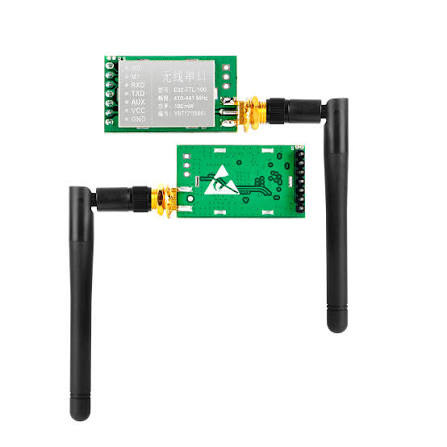
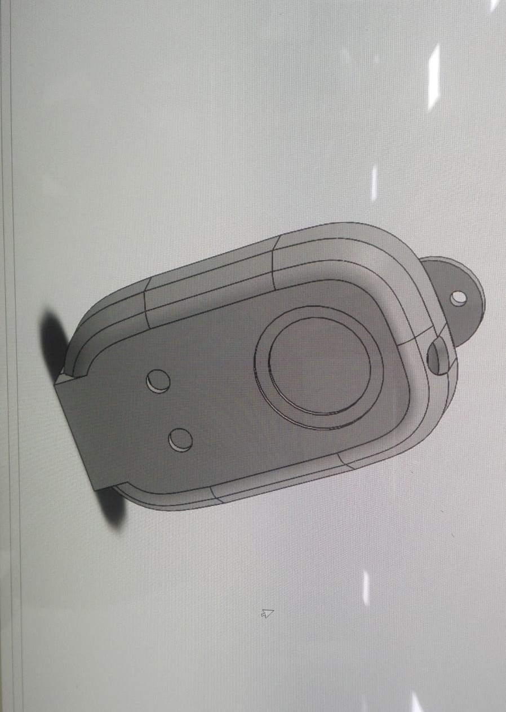

Context
At Engro's power plant in Ghotki, existing communication infrastructure was not reliable enough to be trusted for emergency signaling. In an industrial plant environment, that is not a minor inconvenience: if a worker needs help and the network is down or out of coverage, there is no fallback. The brief was to build a dedicated radio-based emergency alert device that did not depend on the site network at all — something that could operate independently of WiFi coverage, congestion, or outages.
The problem
The device needed to work over real industrial distances, and plant sites can span kilometres. It also had to be simple enough for a worker to trigger under stress — a single physical button, not a menu or app — physically robust enough for harsh industrial use, and cheap enough to replicate. Engro also proposed an attendance-tracking use case for the same hardware as a longer-term second feature, though the core requirement remained the emergency SOS function.
What was built
The design centered on a 433MHz LoRa serial radio module paired with an Arduino Nano as the controller. Both the PCB and the enclosure were designed from scratch: a custom board carrying the Nano and the LoRa module, and a custom CAD 3D-printed casing sized for a single physical trigger button. Every part of the design — PCB, CAD, and firmware — was created end to end.
The system was built as a master–slave radio pair. Pressing the trigger on the slave unit sent an SOS signal over the dedicated LoRa link to the master, which could sit in a monitoring location or relay onward to plant security or response staff. Because the link was a dedicated point-to-point radio connection rather than shared network infrastructure, it remained dependable exactly when standard communications were most unreliable.
Attendance tracking using the same paired-device concept was discussed as a future extension after the SOS prototype proved out, but once COVID-19 hit and site priorities shifted, the focus stayed on the safety function rather than expanding the scope prematurely.
System thinking
Radio link
A 433MHz LoRa serial transceiver on each end provided long-range operation at low power and simple UART-level integration with the Nano. The module handled the RF layer, reducing the need for a custom radio protocol stack.
Controller and trigger
The Arduino Nano on each unit read the trigger button on the slave side and drove the module's serial interface. This kept the interface simple and resilient under pressure.
Enclosure and packaging
A self-designed 3D-printed housing was built specifically around the PCB layout and button placement, rather than adapting an off-the-shelf enclosure.
Operational model
The system intentionally separated the emergency signal path from standard plant communications so that a WiFi outage or network congestion would not block the SOS trigger itself.
Results and lessons
The single master–slave prototype pair was field-tested at both 1km and 10km separation, and the SOS signal was received reliably at both distances. That validation proved LoRa was a viable fallback channel in environments where standard network coverage could not be guaranteed. As a single-purpose, single-button device with its own radio link, it solved the exact failure mode it was designed to address: no WiFi outage or congestion event could take the emergency path down with it.
The project also showed discipline in scope management. Attendance tracking was a natural extension on the same hardware, but rather than half-building two features, the emergency capability was completed and tested before any future feature work was considered. That kept the product aligned with the real operational priority and avoided a diluted design.
Visual documentation


